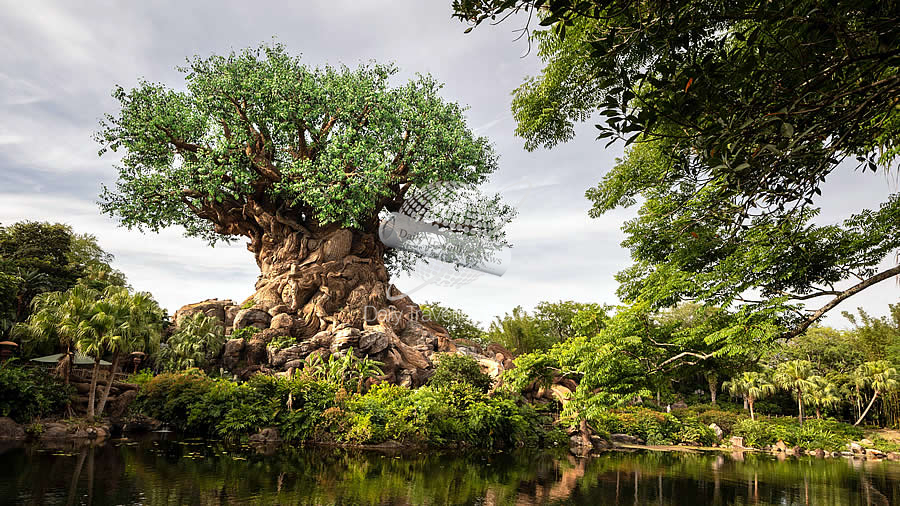

Animal Kingdom
¡Bienvenido a Disney's Animal Kingdom, donde la aventura se une a la naturaleza para crear experiencias
inolvidables!
Desde su apertura en 1998, este parque temático único ha cautivado a visitantes de todas las edades con
su combinación
de emoción, educación y conservación.
Ubicado en Orlando, Florida, Disney's Animal Kingdom es el hogar de una asombrosa variedad de vida
silvestre, desde
majestuosos elefantes africanos hasta feroces leones de la sabana. Con más de 500 acres de terreno
exuberante, el parque
ofrece la oportunidad de explorar fascinantes ecosistemas, desde la exuberante selva tropical hasta las
vastas llanuras
africanas.
Embárcate en emocionantes safaris para encontrarte cara a cara con algunas de las criaturas más
impresionantes del
mundo, o aventúrate en emocionantes atracciones como Expedition Everest y Avatar Flight of Passage.
Sumérgete en la
cultura y la historia en los diversos espectáculos y entretenimientos, y descubre la importancia de la
conservación y la
preservación de la vida silvestre en todo el mundo.
Ya sea que seas un amante de los animales, un entusiasta de la naturaleza o simplemente busques una
experiencia única en
un parque temático, Disney's Animal Kingdom te ofrece la oportunidad de conectar con la naturaleza de
una manera
emocionante y educativa. ¡Prepárate para una aventura inolvidable en Disney's Animal Kingdom!

Lista de precios de entradas